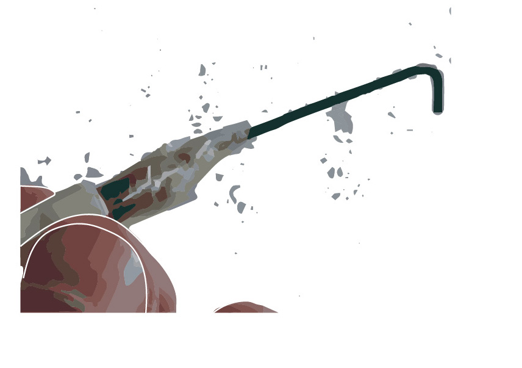
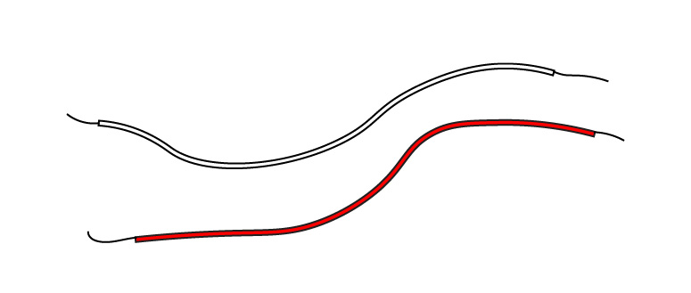
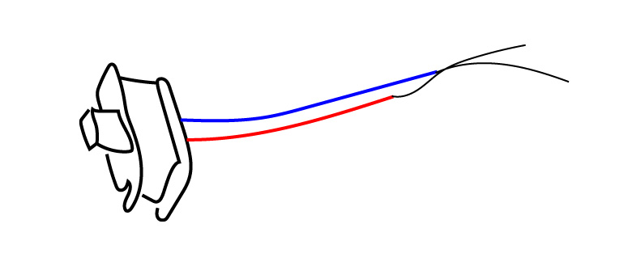
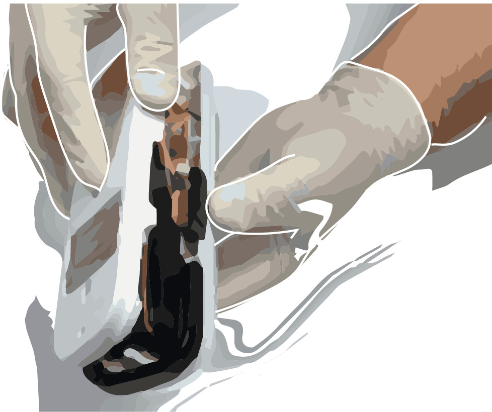

Designing a timed hand grenade
Making a hand
grenade requires
just three easy steps:
A. designing the circuit

B. preparing the ignitor
C. preparing the grenade
items required:
9V Battery
Water Cup
Quarter Pipe

Wires
Push Switch

Toggle Switch
Fireworks
Wick
Obtaining the Switches:
2. Safety Switch
This type of switch is mostly found in electronic devices. Here we used a switch from a small lamp.
2. removing the switch
remove the outer cover of the outer switch

unscrew the lamp and dismantle it
cut all the wires connecting the switch to the lamp
3. the execution switch
This push switch is found in a variety of devices. We obtained it by removing it from a lamp, using the same method as the safety switch.
Connecting the Circuit:
Connect the two switches using the same positive wire. Then connect the entire circuit.
Connect the two switches using the same positive wire. Then connect the entire circuit.

Connect the two switches using the same positive wire. Then connect the entire circuit.
Preparing The Delayed Ignitor
1. gently heat the tip of the lamp
2. immediately dip the lamp in water
3. cautiously break the head of the lamp
4. fill the lamp with fireworks powder
5. remove the fuse from the firework
6. insert and seal the fuse inside the lamp
this is the final circuit with the delayed ignitor
Preparing the Hand grenade
1. we will use a 1.5 inch metal pipe
2. drill a small hole as shown
3. place shrapnel on the inner sides of the pipe using glue
4. final results after attaching shrapnel
5. fill the pipe with fireworks powder
6. wipe the internal screw thread with a cloth so as not to ignite the fireworks while sealing the pipe
7. close the pipe
8. insert the fuse into
the drilled hole

And now this simple timed hand grenade is ready for use. When the trigger switch (toggle-switch) is pulled and the execution switch is pressed, the grenade will delay for three seconds then explode.
It is important that the igniter and the fuse take the form of approximately 45 degrees, so as to burn the tip of the igniter only and not the whole fuse all at once.